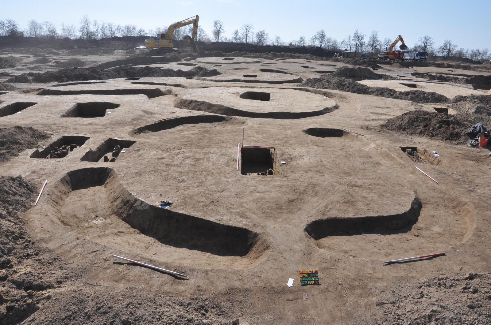
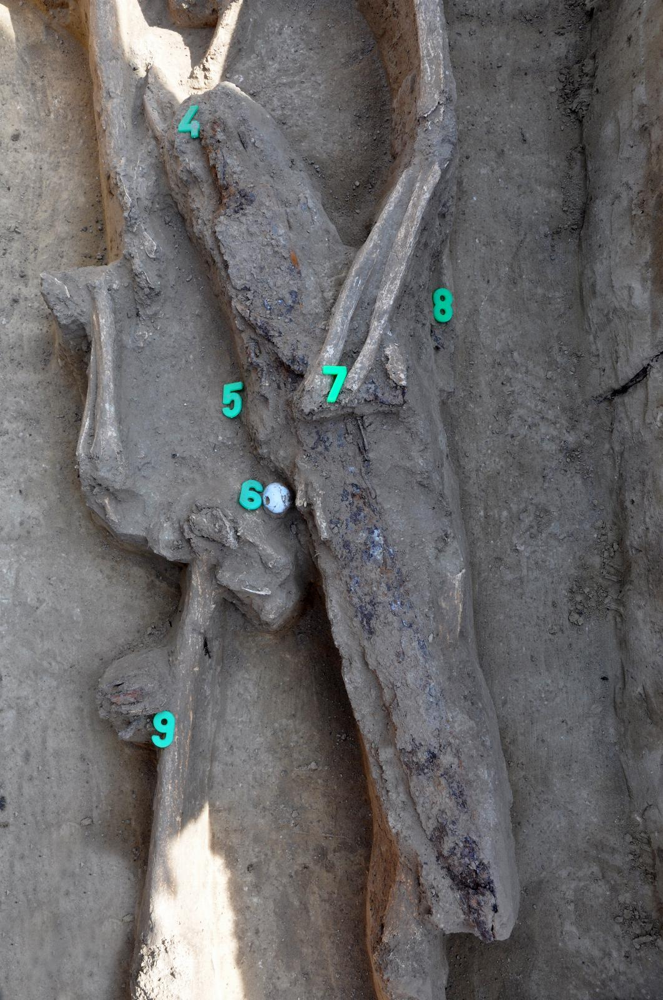
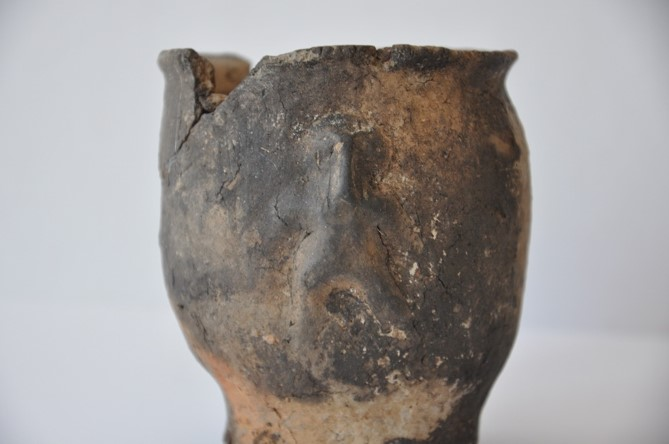
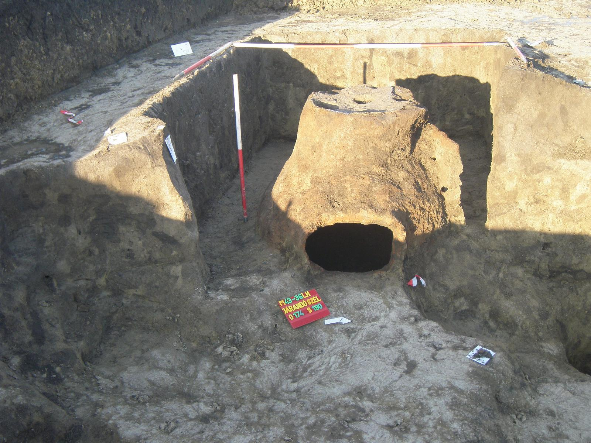
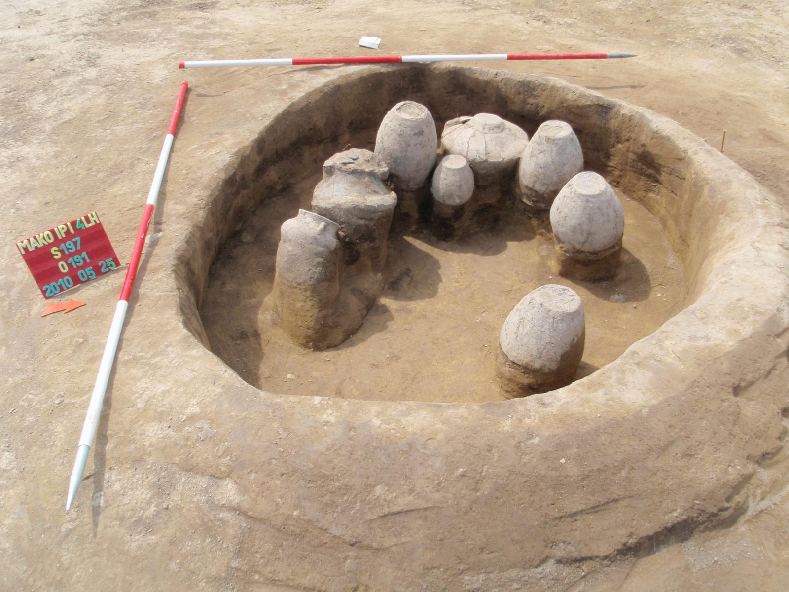
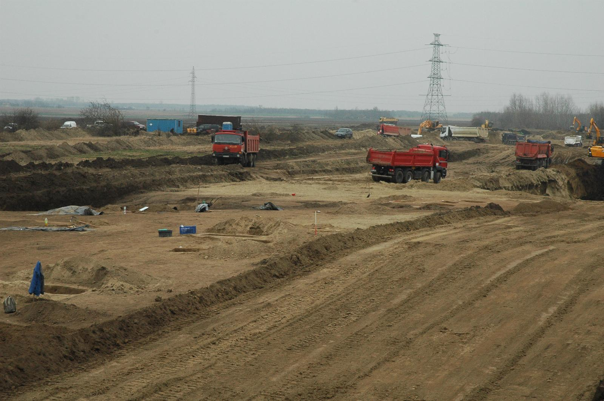
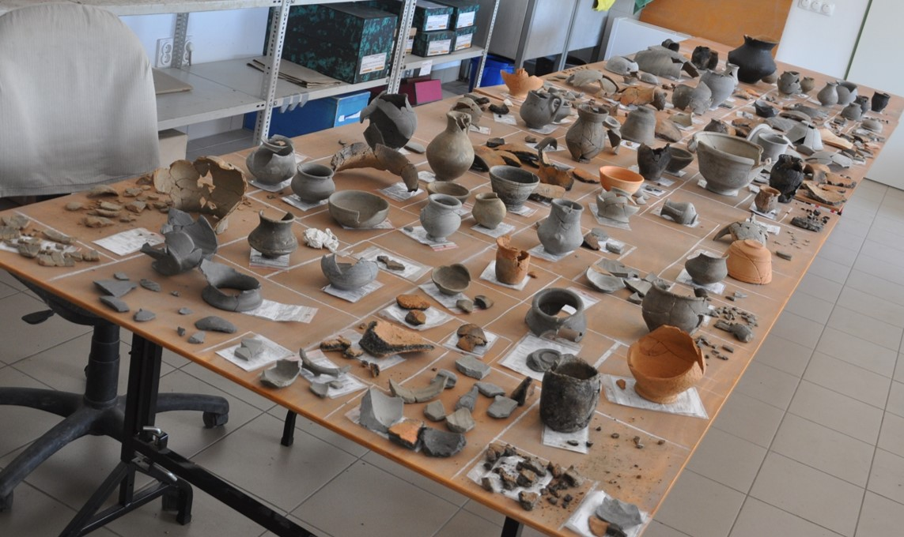
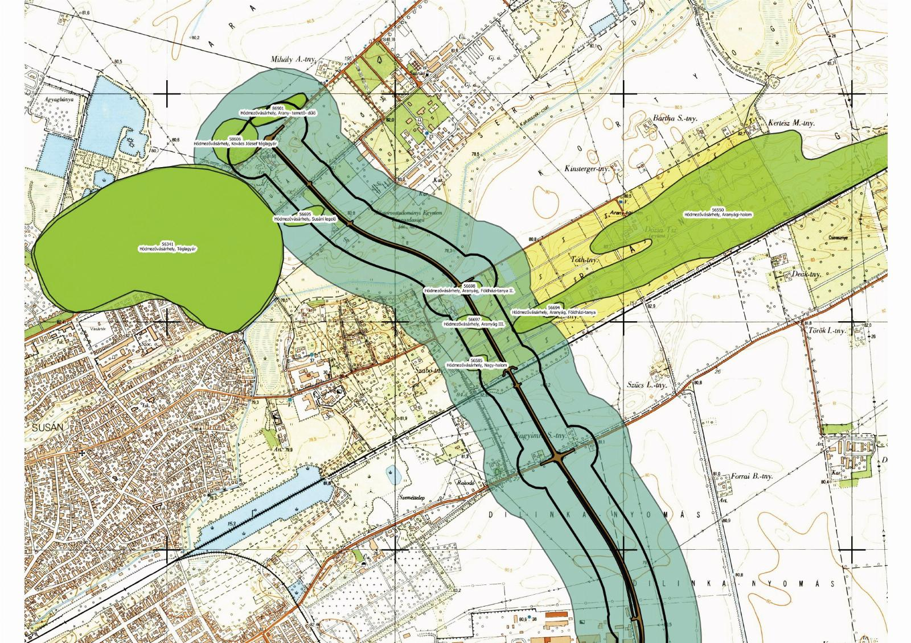

Über uns
Willkommen auf der Webseite von ArchaeoSchild! Unser Unternehmen ist der Erforschung und Bewahrung der Vergangenheit verpflichtet. Unser Team aus erfahrenen Archäologen und Restauratoren arbeitet mit Leidenschaft daran, wertvolle Relikte der Geschichte aufzudecken, zu dokumentieren und für zukünftige Generationen zu erhalten. Unsere Haupttätigkeitsbereiche umfassen archäologische Ausgrabungen, die Restaurierung von Funden sowie die Erstellung archäologischer Dokumentationen.
Ob es sich um vorgeschriebene Ausgrabungen vor Bauprojekten, wissenschaftliche Forschungen oder den Schutz des kulturellen Erbes handelt, wir garantieren professionelle und präzise Arbeit. Jede Ausgrabung wird sorgfältig vorbereitet und erforscht, um mit höchster Präzision und Effizienz zu arbeiten. Wir legen großen Wert darauf, dass die entdeckten Funde und ihr archäologischer Kontext angemessen dokumentiert und bewahrt werden.
Unser Unternehmen nutzt moderne Technologien zur detaillierten Erfassung von Fundstellen und Artefakten, darunter 3D-Scans, Photogrammetrie und traditionelle zeichnerische Dokumentation. Unsere Arbeit liefert nicht nur eine Grundlage für wissenschaftliche Forschungen, sondern spielt auch eine wichtige Rolle im Bereich des Denkmalschutzes und der musealen Präsentation.
Aktuelles aus unseren Ausgrabungen

Grab eines römischen Soldaten aus Makó

Männerdarstellung aus Keramik

Keramikwerkstatt von Makó

Spätbronzezeitliche Keramik
Unsere Leistungen

Rettungsgrabung
Trotz sorgfältiger Planung und Vorerhebungen kommt es immer wieder vor, dass Auftraggeber von Bauvorhaben unvorbereitet mit der Auffindung archäologischer Fundstellen konfrontiert sind. Wir sorgen für eine rasche und flexible Abwicklung der notwendigen bodendenkmalschützerischen Maßnahmen, um Bauverzögerungen zu vermeiden.
Restaurierung
Zu unseren Dienstleistungen gehört auch die Konservierung und Restaurierung archäologischer Funde. Bereits an Ort und Stelle werden die Funde von ausgebildeten Restauratorinnen und Restauratoren sicher dokumentiert und geborgen. Unsere Kunden können das ausgegrabene Fundmaterial dadurch in lagerungsfähigem Zustand aufbewahren.


Archäologische Dokumentation
Neben den klassischen Dokumentationsformen wie Text, Zeichnung, Foto und Fotogrammetrie erfassen wir Baudenkmäler auch mit einer 3D-Laserscan-Methode. Mit dieser Methode kann sehr schnell eine dreidimensionale Punktwolke hoher Dichte erzeugt werden. Damit ist eine Kostenminimierung für den Auftraggeber gewährleistet.
Unser Team
Mag. Max Mustermann
Archäologe
geschäftsführender Gesellschafter
Forschungsgebiet
Spätbronzezeit, Hallstattzeit
Mag. Erika Musterfrau
Restauratorin
Forschungsgebiet
Konservierung von Metallfunden
Dr. Anna Beispiel
Archäologin
Forschungsgebiet
Römische Kaiserzeit
Dr. Anna Beispiel
Archäologin
Forschungsgebiet
Römische Kaiserzeit
Dr. Anna Beispiel
Archäologin
Forschungsgebiet
Römische Kaiserzeit
Dr. Anna Beispiel
Archäologin
Forschungsgebiet
Römische Kaiserzeit
Dr. Anna Beispiel
Archäologin
Forschungsgebiet
Römische Kaiserzeit
Dr. Anna Beispiel
Archäologin
Forschungsgebiet
Römische Kaiserzeit
Dr. Anna Beispiel
Archäologin
Forschungsgebiet
Römische Kaiserzeit
Referenzen
| Ort | Archäologische Zeiten | Datum | Fundstelle | Ausgrabungsgebiet | Unterlagen |
|---|---|---|---|---|---|
| Makó-Járandószék | Völkerwanderungszeit | 2016 | Siedlung | 25.251 Quadratmeter | PDF-Dokument |
| Laa an der Thaya | Römische Kaiserzeit, Spätbronzezeit | 2017–2018 | Gräberfeld | 520 Quadratmeter | PDF-Dokument |
| Hallstatt | Eisenzeit | 2019 | Gräberfeld und Siedlung | 214 Quadratmeter | PDF-Dokument |
| Maroslele-Pana | Mittel- und Jungneolithikum | 2015 | Gräberfeld | 5.321 Quadratmeter | PDF-Dokument |
| Hódmezővásárhely-Aranyág | Römische Kaiserzeit, Spätbronzezeit | 2017–2018 | Gräberfeld und Siedlung | 207.056 Quadratmeter | PDF-Dokument |
Freiwillige gesucht
Wenn Sie sich für die Altertümer Österreichs interessieren, eine sehr gute gesundheitliche Verfassung und eine gute Kondition sowie Freude an körperlicher Betätigung haben und gut mit Hitze umgehen können, wird Ihnen eine Grabung in Österreich ein unvergessliches Erlebnis bieten. Spezielle Fachkenntnisse oder Ausgrabungserfahrung brauchen Sie nicht mitzubringen, wohl aber eine gute Portion Abenteuerlust und Neugier.